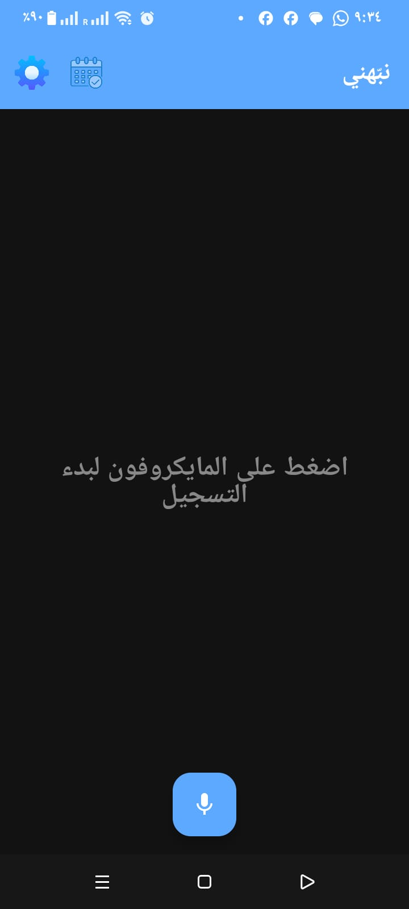

لقطات من التطبيق
تصميم بسيط وأنيق يسهل عليك كل شيء



لقطات حقيقية من تطبيق شيلد.
درعك الرقمي لفحص الروابط المشبوهة. احمِ بياناتك وجهازك من الاحتيال والفيروسات بضغطة زر واحدة باستخدام تقنيات Google Safe Browsing.
أداة بسيطة وقوية لحمايتك من مخاطر الإنترنت
الصق أي رابط مشبوه واضغط فحص. التطبيق يتواصل مع قواعد بيانات جوجل العملاقة ليعطيك النتيجة في ثوانٍ.
يكتشف صفحات التصيد (Phishing) والبرامج الضارة قبل أن تفتحها، ليحمي حساباتك البنكية وبياناتك الشخصية.
واجهة مستخدم مرنة تدعم اللغتين العربية والإنجليزية بالكامل، مع حفظ تفضيلاتك تلقائياً.
تصميم عصري باستخدام Jetpack Compose، يركز على سهولة الاستخدام بدون تعقيدات أو إعلانات مزعجة.
بسيط وسريع، لا يحتاج لأي خبرة تقنية
انسخ الرابط الذي تشك فيه من أي تطبيق (واتساب، فيسبوك، أو رسائل نصية).
افتح "شيلد" والصق الرابط في حقل الإدخال، ثم اضغط على زر "فحص الرابط".
في ثوانٍ، ستظهر لك النتيجة: ✅ آمن أو ⚠️ خطر مع سبب التهديد.
تصميم بسيط وأنيق يسهل عليك كل شيء

لقطات حقيقية من تطبيق شيلد.
كل ما تريد معرفته عن درعك الرقمي
خلف هذا المشروع الأمني

مبرمج ومطور تطبيقات Android، مهتم بأمن المعلومات وتقديم تجارب رقمية آمنة للمستخدم العربي.